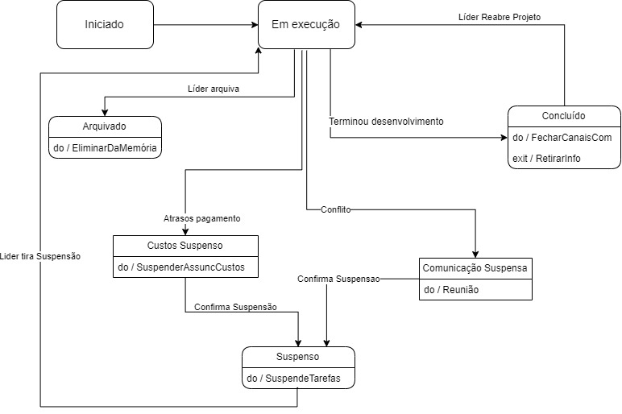

Diagrama de Máquina de Estados

Com este diagrama, pretendíamos, representar os vários estados no processo de criação de um
projeto. Este pode ser Iniciado, Concluído, Arquivado e/ou Suspenso.
Aquando, do estado, "Em Execução", pode passar ao estado "Concluído", se for terminado o
desenvolvimento. Caso o Líder assim o decida, pode ser reaberto o projeto, passando, novamente ao estado
"Em Execução".
Caso, o Líder decida arquivar, este passa para o estado "Arquivado".
Caso, existam atrasos no pagamento ou conflitos, este passará ao estado "Suspenso", passando
pelos estados "Custos Suspenso" ou "Comunicação Suspensa", respetivamente.